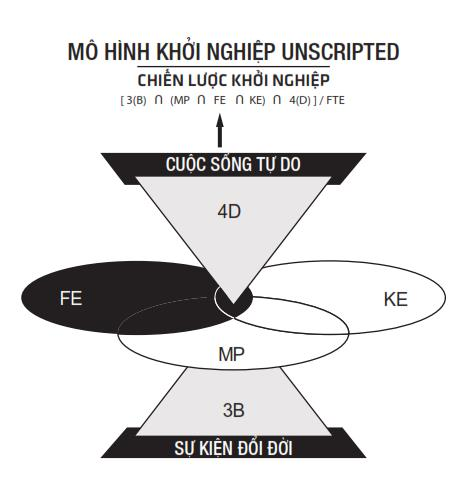

Con người không thể sống nếu không có mục đích. Nếu họ không tìm thấy mục đích, hoặc họ tự tạo ra hoặc cuộc sống sẽ chấm hết.
– Chester Himes
TÌM KIẾM MỤC ĐÍCH CUỘC ĐỜI
Nếu bạn không chắc chắn về mục đích và ý nghĩa cuộc đời mình, rất xin lỗi, bạn không có. Nếu bạn rầu rĩ khi đội bóng mình yêu thích thua trận, đoán thử xem?
Không mục đích. Không ý nghĩa.
Trái lại, nếu có điều gì đó ám ảnh bạn, làm bạn thức khuya dậy sớm, xin chúc mừng, bạn giống như nhân vật Skywalker trong phim Star Wars – thần lực đang ở bên bạn.
Nếu bạn đang khó khăn để tìm mục đích và ý nghĩa cho cuộc đời mình. Hãy thử tưởng tượng bạn nhận được thông báo từ văn phòng chẩn đoán, và bây giờ thời gian còn lại của bạn là vài tháng. Liệu bạn có còn bận tâm đến những thực tế giả tạo vớ vẩn? Còn đam mê thì sao?
Mục đích và ý nghĩa của bạn là điều cốt yếu ở đây. Nó khiến bạn hành động trong khi người khác trì hoãn. Thật vậy, nó rất mạnh mẽ và cũng có thể gây nguy hiểm. Nếu bạn sẵn sàng làm bất kỳ điều gì cần thiết, đôi khi nó có thể dẫn đến những điều trái với các chuẩn mực đạo đức. Giống như nhân vật Jay Gatsby trong truyện The Great Gatsby của Scott Fitzgerald.
Không có mục đích và ý nghĩa cũng là lý do vì sao chúng ta có cả hội nghiện phim dài tập, cả nhóm chia phe tranh cãi kịch liệt trên mạng xã hội về những điều chẳng đi đến đâu. Khi có mục đích và ý nghĩa rõ ràng, những thứ vớ vẩn này không lọt vào sự chú ý của bạn.
Vậy làm sao để tìm ra mục đích và ý nghĩa nếu bạn chưa có?
Kỳ lạ là nó có thể là bất cứ điều gì. Điều khiến bạn phấn khích có thể khiến tôi ngáp dài. Một ý nghĩa mạnh mẽ có thể là hình ảnh chiếc xe Lamborghini hoặc một lời chê bai của bạn bè, hoặc là khi ba mẹ bạn mắng mỏ: “Con là đồ vô dụng”. Rất thường xuyên, sự kiện đổi đời chính là khoảnh khắc đủ để cho bạn thấy mục đích của cuộc đời mình.
Nếu vẫn chưa tìm ra, hãy thử điều này: thử tưởng tượng bạn có 1 tỷ đô-la. Bây giờ, bạn sẽ làm gì? Tôi không nói là đi du lịch, ăn chơi, hay mua siêu xe. Điều tôi đang nói là những gì bạn sẽ làm sau khi đã làm hết những điều đó. Sau khi có mọi thứ, xem mọi thứ, bạn sẽ làm gì? Viết lách? Làm từ thiện? Làm phim? Cho dù đó là gì, đó là manh mối chỉ cho bạn mục đích và ý nghĩa.
Nếu vẫn chưa tìm ra, sẽ chẳng còn cách nào khác ngoài cách tương tác nhiều hơn với cuộc sống. Hãy bắt tay vào làm một điều gì đó, tình nguyện, bắt đầu tập gym, hoàn thành một nhiệm vụ nào đó. Giống như sự kiện đổi đời, rất nhiều lần ý nghĩa của cuộc sống được hé lộ khi trải qua bi kịch, khó khăn hay một sự kiện nào đó quan trọng trong cuộc sống. Có thể là khi có đứa con đầu lòng và bạn muốn làm một người cha, người mẹ tốt nhất, hoặc trắng tay sau nhiều năm giàu có.
Không may là khi bạn tìm kiếm điều này trên Google, bạn sẽ thấy một đống lộn xộn không đầu không đuôi từ hệ lụy của hai lời khuyên “làm những gì bạn thích” và “theo đuổi đam mê”.
MỤC ĐÍCH CUỘC ĐỜI ĐƠN GIẢN HƠN BẠN NGHĨ
Nếu vẫn chưa tìm ra mục đích, hãy thử thí nghiệm này: niềm nở tươi cười với một người hoàn toàn xa lạ như thể họ là người đầu tiên bạn nhìn thấy sau vài năm ở một mình trên hoang đảo. Làm vài lần cho đến khi bạn nhận được một nụ cười đáp trả.
Bây giờ xem thử cảm nhận của bạn như thế nào.
Hạnh phúc?
Chúc mừng, bạn vừa tạo ra giá trị cho đời.
Tiếp tục thử thách này trong ba mươi ngày tiếp theo, nỗ lực tìm cách giúp đỡ ai đó một cách chân thành. Và bên cạnh đó học thêm kỹ năng mới để có thể giúp họ. Làm cho đến khi hoàn thành. Cho dù bạn làm gì, viết sách bán trên Amazon hay sửa lại một cái tủ đã hỏng, điều quan trọng là tạo ra giá trị cho người khác bằng kỹ năng mới mà bạn phải tự học.
Và sau đó, hãy xem thử cảm nhận của bạn như thế nào. Chắc chắn bạn sẽ thấy phấn khích và mãn nguyện. Điều tương tự cũng xảy ra khi khởi nghiệp kinh doanh và nhận được kết quả phản hồi tích cực.
Bây giờ, hãy thử tưởng tượng bạn không chỉ mang đến giá trị cho một người mà hàng ngàn người…
Ý của tôi ở đây là, tạo ra giá trị giúp người khác và nhận được thù lao xứng đáng thì rất tuyệt vời. Giống như cảm giác nhìn thấy con bạn thắng giải Wimbledon.
Có lẽ ẩn chứa đằng sau lý do, chúng ta đều chia sẻ chung một mục đích và ý nghĩa – giúp nhau giải quyết vấn đề và làm cho cuộc sống tốt đẹp hơn.
BÍ MẬT CỦA HẠNH PHÚC
Tôi rất hiểu nếu bạn vẫn khăng khăng rằng ta chỉ hạnh phúc khi được làm những gì mình thích. Nếu đam mê của bạn có thể giải quyết nhu cầu của người khác, vậy thì không có lý do gì mà không tiếp tục. Tốt hơn là thử còn hơn là không làm gì cả.
Tôi phê phán hai lời khuyên “làm những gì bạn thích” và “theo đuổi đam mê” bởi vì nó không phải lúc nào cũng đúng hoặc là con đường duy nhất dẫn đến hạnh phúc.
Thật vậy, bạn có biết điều gì chắc chắn sẽ đem lại hạnh phúc? Đó chính là lý do bạn đọc cuốn sách này. Tiền? Bí mật kinh doanh? Danh tiếng?
Thực ra đều không phải.
Chìa khóa nắm giữ bí mật hạnh phúc chính là sự tự do. Đó là khả năng tự do lựa chọn làm điều mình muốn. Bạn còn nhớ tôi đã đề cập đến khoảnh khắc tự do khi lần đầu tiên tôi nhận ra mình không cần phải làm việc trong ít nhất một năm? Đó là một trong những khoảnh khắc hạnh phúc nhất của tôi bởi vì nó cho tôi sự tự do.
Bạn thấy đấy, bất kỳ ai nói tiền không mua được hạnh phúc đều dùng tiền sai mục đích. Tiền có thể mua sự tự do, hoặc nó có thể giúp bạn không phải mua trả góp, rơi vào cảnh nợ nần.
Vào năm 2014, tôi thấy một bài viết có tiêu đề “Tỷ phú minh chứng cho tiền không mua được hạnh phúc”. Trước khi tôi đọc bài viết, tôi đoán ngay lý do là vì tỷ phú này đánh mất tự do hoặc không thể kiểm soát một điều gì đó – như ly dị, kiện tụng hay con cái gặp rắc rối. Và bài viết đã xác nhận cho suy đoán của tôi là chính xác. Các nhà tâm lý học chỉ ra rằng cha mẹ không thể hạnh phúc hơn con cái.
Điều này cũng giải thích vì sao một số công việc giúp con người hạnh phúc và mãn nguyện hơn, và tại sao không phải ai cũng nên kinh doanh khởi nghiệp. Nếu công việc của bạn phù hợp với mục đích và ý nghĩa, và cùng lúc cho bạn sự tự do, bạn đã tìm thấy mỏ vàng.
Do đó, có thể bí mật của hạnh phúc không phải là “làm những gì mình thích” hay “theo đuổi đam mê” mà đơn giản là tự do và tự phát triển bản thân trong khi chia sẻ với người khác. Và nếu bạn không thể tìm thấy công việc đó, điều gì có thể đem lại cho bạn hạnh phúc ngoài kinh doanh khởi nghiệp? Có thể bạn sẽ mãn nguyện khi phát minh ra cái bẫy chuột tốt hơn mà không cần phải yêu thích nó – hoặc có thể là bạn chưa nhận ra.
Nếu bạn không hạnh phúc, sự tự do có phải là nguyên nhân? Bạn đã có lựa chọn nào (hoặc không) dẫn đến đánh mất khả năng sống tự do?
LỰA CHỌN HAY VIỆN CỚ
Bất cứ khi nào nghe đến chữ “Chicago” là tôi thấy khó chịu. Nó biểu trưng cho đời sống khốn khổ của tôi. Trước hai mươi lăm tuổi, tôi đau khổ và chỉ muốn chấm dứt cuộc sống của mình. Cho dù tôi cố gắng bao nhiêu, tôi vẫn không thể tìm thấy hạnh phúc – dù có mục đích sống rõ ràng, tôi vẫn thấy có điều gì đó không ổn.
Đó chính là cố gắng tuyệt vọng của tôi khi cố kiểm soát mọi thứ vượt ngoài tầm với của mình. Nếu bạn hướng đến những điều mình có thể kiểm soát, bạn có khả năng thay đổi cuộc đời mình cho dù hoàn cảnh bên ngoài là như thế nào. Điều này giống như là cách nghĩ khả năng của con người luôn có thể cải thiện để đạt được thành công. Trái lại, nếu cố kiểm soát những thứ không thể, bạn sẽ đánh mất sự kiểm soát và để cuộc sống của mình phụ thuộc vào may rủi. Điều này dẫn đến cách nghĩ sai lầm khi bạn cố tìm lý do viện cớ, đổ lỗi cho thời tiết, cho môi trường, giáo dục – cho bất cứ điều gì chứ không phải do bản thân mình.
Với cách nghĩ sai lầm đó, bạn đánh mất quyền kiểm soát cuộc sống của mình. Người khác sẽ làm bạn thất vọng. Cho dù chuyện gì xảy ra, bạn cố đổ lỗi cho người khác.
Cố kiểm soát những điều không thể chỉ dẫn đến đau khổ. Trong trường hợp của tôi, tôi viện lý do vì thời tiết. Tôi cho rằng thời tiết ở Chicago chỉ khiến tôi muốn nằm ì trên giường. Điều đó là đúng nhưng nguyên nhân thực sự là tôi nhận ra mình không thể làm gì khác đi.
Có một lựa chọn mà tôi không nhìn thấy.
Thời tiết làm tôi khốn đốn nhiều năm. Và một ngày nọ, mọi thứ thay đổi. Sau nhiều ngày chứng kiến tôi trong tình cảnh tệ hại, cô bạn gái của tôi nói: “Nếu thời tiết làm anh khổ, tại sao không di chuyển đến nơi khác?”. Chính khoảnh khắc đó, tôi nhận ra mình có sự lựa chọn. Sau đó vài tuần, suy nghĩ “Tôi có thể” chuyển thành “Tôi sẽ làm”. Và vài tháng sau tôi dời đi nơi khác.
Câu chuyện này có hai mặt. Đầu tiên, mục đích và ý nghĩa mà thiếu đi sự kiểm soát đúng đắn thì không thực tế. Khi đó, bạn chỉ còn mong chờ vào may rủi. Bạn phải lựa chọn tin tưởng vào khả năng thành công của mình. Nếu bạn nghĩ không thể kiểm soát thì đó chỉ là thực tế giả tạo. Bạn có quyền tự do lựa chọn định hướng cho cuộc đời mình. Không ai gí súng vào đầu bắt bạn phải đi làm thuê. Không có luật lệ nào cấm bạn tổ chức tiệc tùng vào thứ Hai và làm việc tối thứ Sáu. Không ai cấm bạn tìm kiếm kiến thức. Chốt lại, tất cả mọi thứ bạn nghĩ mình không thể kiểm soát chính là nhà tù giam hãm bạn trong những lời biện hộ, viện cớ, lý do.
Trên diễn đàn của tôi, cũng có nhiều người có nỗi khổ tương tự. Họ đổ lỗi nơi họ sống không có cơ hội, đổ lỗi cho thời tiết… Tôi hiểu tình cảnh của họ. Tuy vậy, khi tôi khuyên hãy rời đi nơi khác, họ lại viện cớ. Đây là nhà, còn gia đình, còn đội bóng yêu thích…
Bạn hoàn toàn có quyền lựa chọn. Hoặc hành động để thay đổi hoặc bó gối ngồi mơ mộng, than thở.
Bất cứ khi nào bạn cảm thấy mình có toàn quyền kiểm soát cuộc đời mình, cho dù đó là ảo tưởng, bạn cảm thấy hạnh phúc hơn về hoàn cảnh của mình. Nếu bạn thấy mình có sự lựa chọn, cuộc sống của bạn đáng sống hơn. Đó là lý do vì sao khởi nghiệp kinh doanh là điều tuyệt vời, bởi vì nó cho bạn quyền kiểm soát, quyết định vận mệnh của mình.
Bây giờ, nếu bạn đang đau khổ trong hoàn cảnh của mình, hãy xem thử những lựa chọn nào bạn có. Bạn đã bỏ lỡ quyết định nào? Bạn đang đổ lỗi cho điều gì? Ai viết kịch bản cho cuộc đời bạn? Xã hội? Gia đình? Tivi? Chốt lại, mọi thứ đều là lựa chọn – gồm cả cách bạn suy nghĩ, nhận thức về hoàn cảnh của mình.
Sức mạnh của bạn không chỉ nằm ở hành động mà còn ở sự lựa chọn, sự tư duy – chính nó cho bạn khả năng đổi đời. Và bạn chính là tác nhân chính. Ai cũng muốn thay đổi, nhưng không ai muốn thay đổi bản thân. Trước khi đổ lỗi cho người khác hay điều gì đó, hãy nhìn vào gương. Đây là cuộc sống của bạn và bạn có toàn quyền quyết định.
